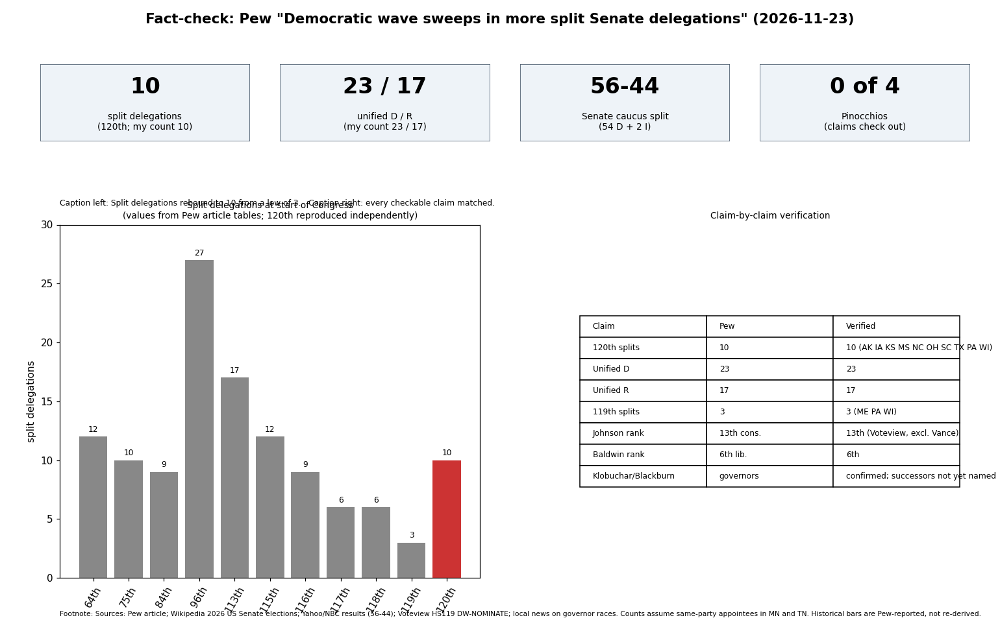

Fact-check: Pew's split-delegation piece rates 0 Pinocchios; its core count of 10 reproduces exactly

Result: accurate, with two assumptions to know
Rating: 0 Pinocchios (accurate). Pew says 10 states will have one Democrat and one Republican senator in the 120th Congress, 23 unified Democratic and 17 unified Republican. I rebuilt the roster from 2026 results and got the same 10 (AK, IA, KS, MS, NC, OH, SC, TX, PA, WI), 23 and 17. Democrats hold 56 seats (54 D + 2 I) to 44 R.
- Pew's analysis assumes Klobuchar (MN) and Blackburn (TN), both elected governor, are replaced by same-party appointees. Both wins are confirmed; no appointments exist yet. Neither changes the count unless a seat goes to the other party.
- Maine (King, an independent, with Jackson D) and Vermont (Sanders I, Welch D) count as unified Democratic only because independents are tallied with their caucus, as Pew discloses.
- "More than at any time since 2019": 10 exceeds the 9 Pew reports for the start of the 116th Congress, but this is close and depends on timing within 2019. I could not independently re-derive the historical series (64th-118th); it is reported from Pew and the Biographical Directory.
- Not checkable here: the 96th Congress peak of 27, the 1973-94 floor of 20, and the 113th "17 (18 for five months)" detail. I did not access the Biographical Directory series. Nothing contradicted them.
- The Wikipedia results page contains an unreconciled South Carolina account (Graham death vs. appointed incumbent). It does not affect the split count: SC is split either way.
Claim table
| Claim | Verdict | Basis |
|---|
| 10 split / 23 D / 17 R in 120th | Verified | Rebuilt from results |
| 3 split in 119th | Verified | ME, PA, WI |
| Johnson 13th most conservative; Baldwin 6th most liberal | Verified | Voteview HS119 DW-NOMINATE dim 1: Johnson ranks 14th of the file, 13th once VP Vance is excluded; Baldwin 6th |
| Klobuchar and Blackburn elected governors | Verified | Local news, Nov 4 2026 |
| Daines/Tester 2020 Montana water compact; Nelson/Martinez 2006 offshore drilling bill | Verified from background knowledge, no new fetch | Congress.gov record not re-fetched |
| Wellstone/Grams, Edwards/Helms, Cranston/Hayakawa pairs | Consistent with known service dates, not re-fetched | |
| First Congress in 14 years with more all-D than all-R | Consistent | 113th (2013) had 19 D to 14 R per Pew table |
| Historical series | Not checkable here | See above |
Sources
- https://www.pewresearch.org/short-reads/2026/11/23/democratic-wave-sweeps-in-more-split-senate-delegations/
- https://en.wikipedia.org/wiki/2026_United_States_Senate_elections
- Yahoo News final-results article (56-44, Peltola win), NBC News Senate results
- https://voteview.com/static/data/out/members/HS119_members.csv
- MPR/KTTC/WSMV reporting on Klobuchar and Blackburn governor wins
Confidence: high on the count (independent rebuild), medium on pre-2019 history.